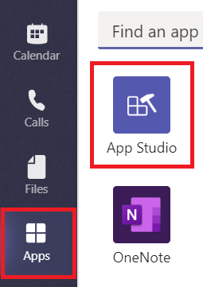
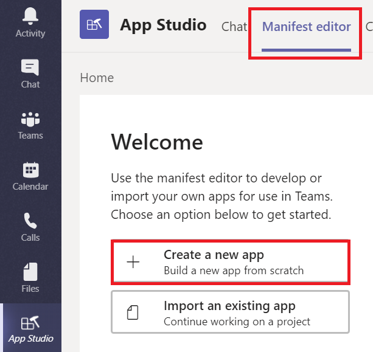
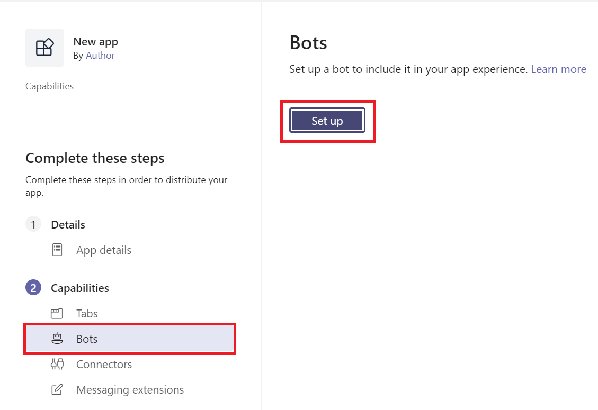
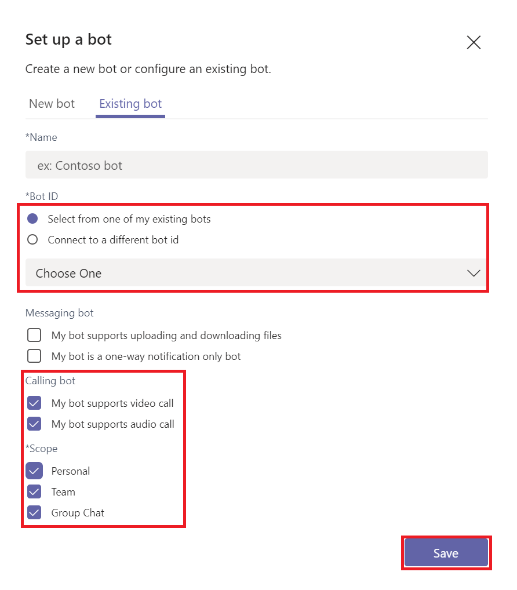

Registering a calling bot
In this topic you will learn how to register a new Calling Bot.
Register your bot in the Azure Bot Service
Complete the following steps:
- Register a bot by creating a Bot Channels Registration through Azure Bot Channel Registration.
- Once you complete the registration, take a note of the registered config values (Bot Name, Application Id, and Application Secret). You will need these values later in the code samples.
- In the resource blade, click Channels.
- Enable the Microsoft Teams channel and enable calling on the Calling tab. Fill in the Webhook (for calling) where you will receive incoming notifications. E.g.
https://{your domain}/api/calls. Refer to Connect a bot to channels for more information on how to configure channels.
Permissions
Add Microsoft Graph permissions for calling to your bot
Microsoft Graph exposes granular permissions controlling the access apps have to resources. As a developer, you decide which permissions for Microsoft Graph your app requests. The Microsoft Graph Communications Calling APIs support Application permissions, which are used by apps that run without a signed-in user present; for example, apps that run as background services or bots. Application permissions can only be consented by a tenant administrator. Calling bots and applications have some capabilties that will need tenant administrator consent. Below is a list of those permissions:
| Permission | Display String | Description | Admin Consent Required |
|---|---|---|---|
| Calls.Initiate.All | Initiate outgoing 1:1 calls from the app (preview) | Allows the app to place outbound calls to a single user and transfer calls to users in your organization's directory, without a signed-in user. | Yes |
| Calls.InitiateGroupCall.All | Initiate outgoing group calls from the app (preview) | Allows the app to place outbound calls to multiple users and add participants to meetings in your organization, without a signed-in user. | Yes |
| Calls.JoinGroupCall.All | Join Group Calls and Meetings as an app (preview) | Allows the app to join group calls and scheduled meetings in your organization, without a signed-in user. The app will be joined with the privileges of a directory user to meetings in your tenant. | Yes |
| Calls.JoinGroupCallasGuest.All | Join Group Calls and Meetings as a guest (preview) | Allows the app to anonymously join group calls and scheduled meetings in your organization, without a signed-in user. The app will be joined as a guest to meetings in your tenant. | Yes |
| Calls.AccessMedia.All *see below* | Access media streams in a call as an app (preview) | Allows the app to get direct access to participant media streams in a call, without a signed-in user. | Yes |
Important: You may not use the Microsoft.Graph.Calls.Media API to record or otherwise persist media content from calls or meetings that your bot accesses.
Assigning permissions
You pre-configure the application permissions your app needs when you register your app. To add permissions from the Azure Bot Registration Portal:
- From the Settings blade, click Manage. This is the link appearing by the Microsoft App ID.

- This link will open a window where you can click on API permissions and then click Add a permission in the right pane. Select Microsoft Graph, choose Application Permissions and then select the permissions your app requires in the Select Permissions dialog.
Getting administrator consent
An administrator can either consent to these permissions using the Azure portal when your app is installed in their organization, or you can provide a sign-up experience in your app through which administrators can consent to the permissions you configured. Once administrator consent is recorded by Azure AD, your app can request tokens without having to request consent again.
You can rely on an administrator to grant the permissions your app needs at the Azure portal, but often a better option is to provide a sign-up experience for administrators by using the Azure AD v2.0 /adminconsent endpoint. Please refer to the instructions on constructing an Admin Consent URL for more detail.
Note: Constructing the Tenant Admin Consent URL requires a configured Redirect URI/Reply URL in the App Registration Portal. To add reply URLs for your bot, access your bot registration, choose Advanced Options > Edit Application Manifest. Add your Redirect URI to the field replyURLs.
Important: Any time you make a change to the configured permissions, you must also repeat the Admin Consent process. Changes made in the app registration portal will not be reflected until consent has been reapplied by the tenant's administrator.
Register bot in Microsoft Teams
The code samples can be used in combination with a Microsoft Teams App Manifest settings to add the Calling and Video buttons for a 1:1 bot interaction. To develop calling bot, add 'supportsCalling' and 'supportsVideo' boolean properties to the bots section in the app manifest and the bot is all set to receive calls once installed (either to a personal context or a team). App Manifests can be uploaded through the App Studio in the Microsoft Teams client.
- In the Teams client, select Apps from the left pane and then select App Studio.

- From the top pane, click Manifest editor and then Create a new app from the left pane.

- In the App details tab, provide the basic information.
- Navigate to the Capabilities section, and select the Bots tab. Then select Set Up in the right pane.

- Fill in the desired bot name
- Select the Select from one of my existing bots option, and find your bot from above in the dropdown.
- Check all options under Calling Bot and Scope
- Press Save
